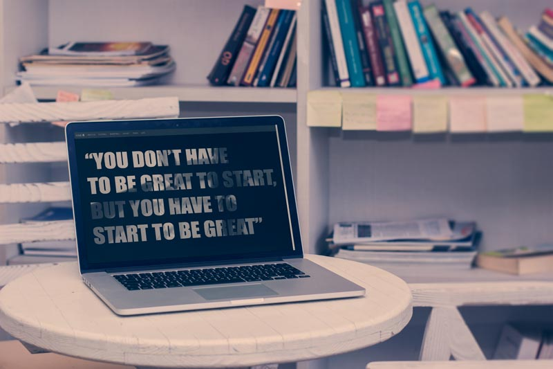

Sports Opportunities for students in Manchester
About the project
At the second year of my University studies, I had a subject called Developing Infocomms Projects. We learnt about different Project Management methodologies and how to apply them on real projects. Our chosen topic was Sports opportunities for students around Manchester. I was working with a group of 7 people. I was responsible for the development of the website.
Challenges
The biggest challenge for the group was to work together efficiently with different people that are not equally committed towards our success. We could overcome this issue by working harder, supporting each other and making sure, we stick to our plans and deadlines. My personal challenge was to learn how to use bootstrap, which turned out is a handy tool if the website has to be done rapidly, but I prefer to write my own code, as websites built on bootstrap has similar look and feeling. Codeacademy.com helped me a lot to understand how this framework works. My second personal challenge was to create a masked video background for the main page, that also responsive and does not use too much bandwidth on mobile devices. In overall the website was not perfect, there is room for improvement, but we have followed all the project management guidelines and best practices, therefore our group has been awarded with a first mark at the end of the term.